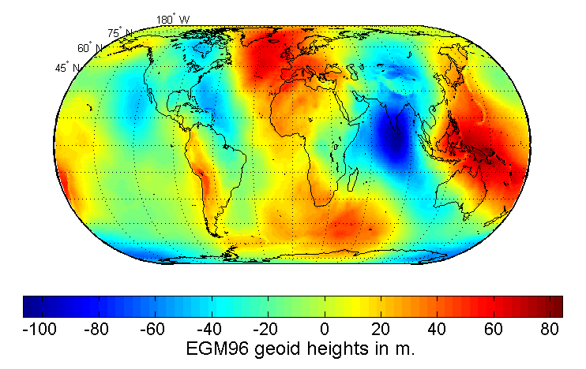

Die Gravitationsbeschleunigung übertrifft die Zentrifugalbeschleunigung am Äquator um das 288-fache.
Wir berechnen die Normalschwere nach der Somigliana-Gleichung und stellen den Verlauf grafisch dar:
Code anzeigen
import matplotlib.pyplot as pltphi_d = np.arange(start=0.0, stop=90.1, step=1.0)gamma_phi = [gamma(np.deg2rad(v)) for v in phi_d]fig, ax = plt.subplots(figsize=(6,4))ax.plot(phi_d, gamma_phi)ax.set_xlabel('Nördliche Breite in Grad')ax.set_ylabel(r"$\gamma_{0}$ in m/s$^2$")ax.set_title("Breitenabhängigkeit der Normalschwere")ax.grid(alpha=0.5)
3.2 Das Geoid
Die Äquipotentialfläche, die mit der ruhenden (mittleren, gezeitenfreien) Meeresoberfläche zusammenfällt, heißt Geoid.
Das Geoid
ist eine ausgewählte Äquipotentialfläche des Schwerepotentials mit \(W_{0}=\mathrm{const}\)
fällt mit ruhender (mittlerer gezeitenfreier) Meeresoberfläche zusammen
setzt sich im Bereich unter den Kontinenten durch gedachte Kanäle fort
Geoid ist gleichermaßen Ort und physikalische Größe mit \(W_{0} \approx 62.2 \times 10^{6} \, \frac{\mathrm{m}^{2}}{\mathrm{s}^{2}}\), festgelegt durch International Association of Geodesy (IAG), 2015.
Darstellung als lokale Abweichung vom Erdellipsoid in Einheit von Metern (Geoidhöhen oder Geoidundulationen).
Wir unterscheiden
Kontinentale Geoidundulationen: Masseninhomgenitäten im Mantel und der tieferen Erdkruste
Regionale Geoidundulationen: Regionale geologische Strukturen, Undulationen der Grenzfläche Kruste/Mantel
Lokale Geoidundulationen: Lokale Masseninhomogenitäten in den oberen km der Erdkruste
Das Geoidmodell EGM96 (Earth Gravitational Model 1996) entstand aus einer Kooperation zwischen NIMA, dem NASA Goddard Space Flight Center und der Ohio State University. Es basiert auf weltweit erfassten Schwerefelddaten – einschließlich neuer Airborne-Schweremessungen über Grönland, der Arktis und Antarktis – und kombiniert terrestrische sowie satellitenaltimetrische Messungen. Das Modell liegt mit einer Rasterauflösung von 15′ × 15′ vor.

Aktuell: EGM2008, EGM2020 in Vorbereitung (Stand Oktober 2025)
3.2.1 Mathematische Beschreibung der Geoidgestalt
Entwicklung nach Kugelflächenfunktionen \[
\begin{align}
N(r, \theta, \lambda) & = \frac{f m_{E}}{r \, \pmb\gamma_{0}(r, \theta)} \\
& = \sum_{n=0}^{\infty} \left( \frac{a}{r} \right)^{n} \sum_{m=0}^{n} P_{nm}(\cos \theta)\left( C_{nm} \cos m\lambda + S_{nm} \sin m \lambda\right)
\end{align}
\] mit
Koeffizienten mit endlichem Grad \(n\) werden aus Schweremessungen, geodätischen Messungen und Bahnstörungen von Satelliten bestimmt.
3.3 Gezeiten der festen Erde
Die Gezeitenkräfte von Mond und Sonne bewirken auf einer elastisch verformbaren Erde messbare Effekte, die sich in der Hebung des Bodens sowie in der damit verbundenen Änderung der Erdschwerebeschleunigung äußern.